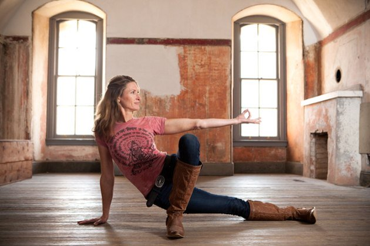

Bryan Kest is the pioneer of Ashtanga yoga in America. He started out with yoga at age 14 and has been teaching
since 1985. Bryan studied in India with K. Pattabhi Jois, who's one of the biggest advocates of Ashtanga yoga.
"My primary objective", says Kest, "besides turning more and more people on to a healthier, more peaceful lifestyle
that continually challenges them to grow, is to teach a system of exercise that fully integrates the body, mind,
and spirit." Bryan Kest has published quite a number of books and DVDs.

Janet-Stone
Style: Vinyasa
San Francisco-based yogini Janet Stone began her journey and formal yoga training in India in 1996, where
she first learned and explored Vinyasa. Her teaching style is a vigorous yet delicious mix of Vinyasa yoga,
chanting, breath and movement, awareness, heart, and humor. Janet, along with her work, has been featured in
several publications like Yoga Journal, Elephant Journal, and Flow Yoga magazine. She currently leads a 200-hour
Vinyasa teacher training program, teaches classes, and conducts workshops and retreats in US, Mexico, and India.